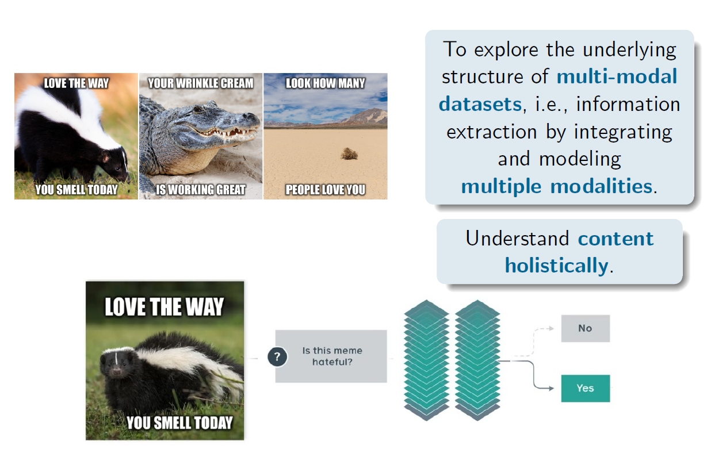
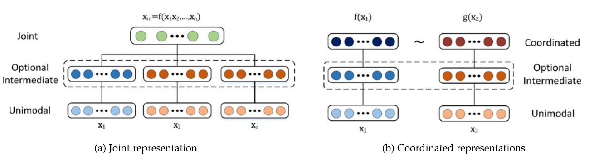
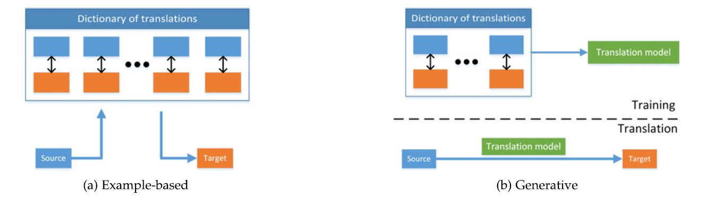
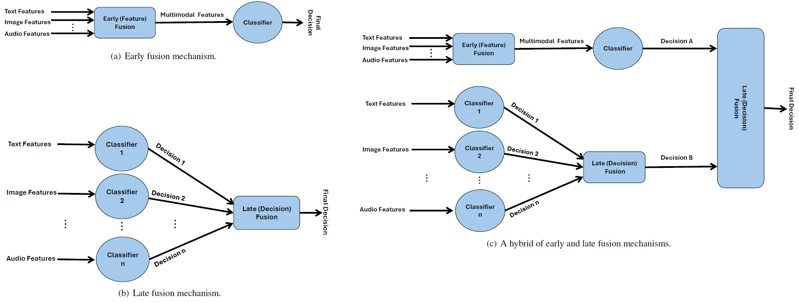
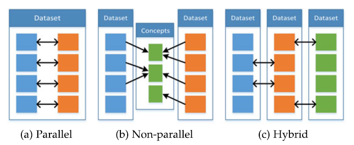

7.1 Multimodal Learning
Two or more views of the same objects.
These notes walk through the lecture slides. The original deck is unchanged; use (slides) on the course hub if you want that PDF.
Figures and notes follow Baltrušaitis, Ahuja, and Morency, Multimodal Machine Learning: A Survey and Taxonomy.
1. Why multimodal learning
Several modalities at once — language, vision, audio — rather than one stream. Complementary signal, and redundant signal. The rest of the note is a taxonomy of the hard parts.

2. Challenges in multimodal fusion
Representation. Learn a summary that uses complementarity and redundancy. Heterogeneity makes this hard. Language is symbolic; audio and vision are signals.
Translation. Map one modality to another. Heterogeneity again, and the map can be open-ended or subjective. Many correct captions for one image; no single perfect translation.
Alignment. Direct relations between elements of different modalities. You need a similarity, long-range dependence, and a way to resolve ambiguity. Example: recipe steps lined up with a cooking video.
Fusion. Combine modalities for a prediction. Example: audio-visual speech recognition (lip motion plus the speech signal). Predictive power can differ by modality; noise topology can differ; data can be missing.
Co-learning. Transfer knowledge across modalities, representations, and predictors. Co-training, conceptual grounding, zero-shot learning. Useful when one modality is resource-poor (few annotations).
3. Multimodal representations
A computational model needs a representation. Multimodal representation uses information from several entities, each a vector or a tensor.
Hard parts: combining heterogeneous data, different noise levels, missing data. Representation quality shows up in speech recognition and object classification.
Wanted properties in general: smoothness, coherence, sparsity, natural clustering. Extra for multimodal: similarity between concepts is reflected, representations are easy to obtain, missing modalities can be handled.
Two types:
| Type | What it does |
|---|---|
| Joint | Combine modalities into one space. A function of the unimodal representations. |
| Coordinated | Process modalities separately, then enforce similarity or structure between them. |

4. Translation
Generate text from images, or the reverse.
-
Example-based. A dictionary. Retrieval finds the closest match. Combination-based models mix examples. Generative models build a map and emit a sequence of symbols — harder.
-
Grammar-based. Templates and a restricted grammar.
-
Encoder–decoder. Encode the source modality, decode the target.
-
Continuous generation. An output at each time step. Natural for sequence-to-sequence.

5. Multimodal alignment
Relations between sub-components of instances from different modalities.
Explicit. Align those sub-components on purpose. Unsupervised: DTW, graphical models. Supervised: labeled pairs. Deep: CNNs, LSTMs.
Implicit. Alignment as an intermediate for another task. Early work used graphical models. Modern nets use attention.
Applications: multimedia retrieval, translation, question answering.
6. Multimodal fusion
Model-agnostic types:
| Fusion | When you combine |
|---|---|
| Early | Right after feature extraction |
| Late | After each modality has made a decision |
| Hybrid | Early-fusion output plus unimodal predictors |

7. Co-learning
Improve a resource-poor modality with a resource-rich one (annotations, reliable labels).
| Approach | Link between modalities |
|---|---|
| Parallel | Directly linked observations |
| Non-parallel | No direct links; often shared categories |
| Hybrid | A shared modality or data set as a bridge |
The helper modality is typically used in training only, not at test time.

Practice
-
Name the five challenges in the taxonomy, and give one example of alignment.
-
What is the difference between a joint representation and a coordinated one?
-
When would late fusion be a better default than early fusion?